California
The average Liberty Score of the delegation is 43 out of 100, an F. 52 of its seats in Congress are decided on November 3, 2026.
Who should California send to Congress, and who should it send home?Say what you think. Other readers can answer you.DiscussOn the ballot November 3
52 House seats in California. Tap a race to see the candidates side by side.
- 1st District
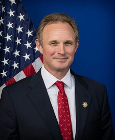
James GallagherR · holds the seat–Mike McGuireD · no votes in Congress, and not researched yet– - 2nd District
 Jared HuffmanD · holds the seatFRobin LittauR · no votes in Congress, and not researched yet–
Jared HuffmanD · holds the seatFRobin LittauR · no votes in Congress, and not researched yet– - 3rd District
 Ami BeraD · holds the seatFRobb TuckerR · no votes in Congress, and not researched yet–
Ami BeraD · holds the seatFRobb TuckerR · no votes in Congress, and not researched yet– - 4th District
 Mike ThompsonD · holds the seatFEric JonesD · no votes in Congress, and not researched yet–
Mike ThompsonD · holds the seatFEric JonesD · no votes in Congress, and not researched yet– - 5th District
 Tom McClintockR · holds the seatB+Michael MasudaD · no votes in Congress, and not researched yet–
Tom McClintockR · holds the seatB+Michael MasudaD · no votes in Congress, and not researched yet– - 6th DistrictRichard PanD · no votes in Congress, and not researched yet–
 Kevin KileyIndependent · holds the seatA
Kevin KileyIndependent · holds the seatA - 7th District
 Doris MatsuiD · holds the seatFMai VangD · no votes in Congress, and not researched yet–
Doris MatsuiD · holds the seatFMai VangD · no votes in Congress, and not researched yet– - 8th District
 John GaramendiD · holds the seatFRudy RecileR · no votes in Congress, and not researched yet–
John GaramendiD · holds the seatFRudy RecileR · no votes in Congress, and not researched yet– - 9th District
 Josh HarderD · holds the seatFJohn McBrideR · no votes in Congress, and not researched yet–
Josh HarderD · holds the seatFJohn McBrideR · no votes in Congress, and not researched yet– - 10th District
 Mark DeSaulnierD · holds the seatFJeff FreseR · no votes in Congress, and not researched yet–
Mark DeSaulnierD · holds the seatFJeff FreseR · no votes in Congress, and not researched yet– - 11th DistrictOpen seatConnie ChanD · no votes in Congress, and not researched yet–Scott WienerD · no votes in Congress, and not researched yet–
- 12th District
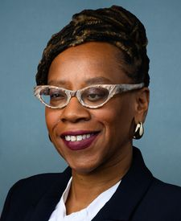
Lateefah SimonD · holds the seatFJamie JoyceD · no votes in Congress, and not researched yet– - 13th District
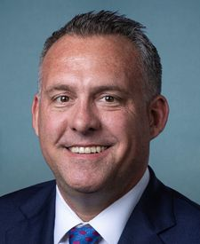
Adam GrayD · holds the seatFKevin LincolnR · no votes in Congress, and not researched yet– - 14th District
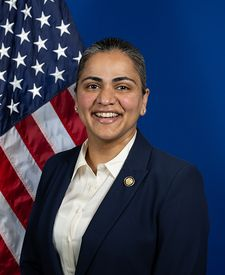
Aisha WahabD · holds the seat–Melissa HernandezD · no votes in Congress, and not researched yet– - 15th District
 Kevin MullinD · holds the seatFCharles HoelterR · no votes in Congress, and not researched yet–
Kevin MullinD · holds the seatFCharles HoelterR · no votes in Congress, and not researched yet– - 16th District
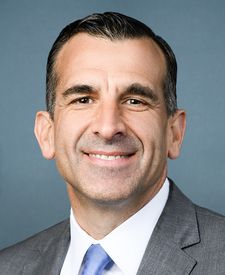
Sam LiccardoD · holds the seatFPeter SouléR · no votes in Congress, and not researched yet– - 17th District
 Ro KhannaD · holds the seatFRitesh TandonR · no votes in Congress, and not researched yet–
Ro KhannaD · holds the seatFRitesh TandonR · no votes in Congress, and not researched yet– - 18th District
 Zoe LofgrenD · holds the seatFShane LewisR · no votes in Congress, and not researched yet–
Zoe LofgrenD · holds the seatFShane LewisR · no votes in Congress, and not researched yet– - 19th District
 Jimmy PanettaD · holds the seatFPeter Coe VerbicaR · no votes in Congress, and not researched yet–
Jimmy PanettaD · holds the seatFPeter Coe VerbicaR · no votes in Congress, and not researched yet– - 20th District
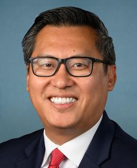
Vince FongR · holds the seatB+Sandra Van ScotterD · no votes in Congress, and not researched yet– - 21st District
 Jim CostaD · holds the seatFKyle KirklandR · no votes in Congress, and not researched yet–
Jim CostaD · holds the seatFKyle KirklandR · no votes in Congress, and not researched yet– - 22nd District
 David ValadaoR · holds the seatARandy VillegasD · no votes in Congress, and not researched yet–
David ValadaoR · holds the seatARandy VillegasD · no votes in Congress, and not researched yet– - 23rd District
 Jay ObernolteR · holds the seatA-Tessa Lynn HodgeD · no votes in Congress, and not researched yet–
Jay ObernolteR · holds the seatA-Tessa Lynn HodgeD · no votes in Congress, and not researched yet– - 24th District
 Salud CarbajalD · holds the seatFBob SmithR · no votes in Congress, and not researched yet–
Salud CarbajalD · holds the seatFBob SmithR · no votes in Congress, and not researched yet– - 25th District
 Raul RuizD · holds the seatFJoe MalesR · no votes in Congress, and not researched yet–
Raul RuizD · holds the seatFJoe MalesR · no votes in Congress, and not researched yet– - 26th DistrictOpen seatSam GallucciR · no votes in Congress, and not researched yet–
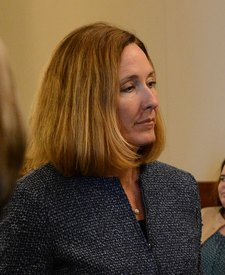
Jacqui IrwinD · no votes in Congress, and not researched yet– - 27th DistrictGeorge WhitesidesD · holds the seatFJason GibbsR · no votes in Congress, and not researched yet–
- 28th District
 Judy ChuD · holds the seatFApril VerlatoR · no votes in Congress, and not researched yet–
Judy ChuD · holds the seatFApril VerlatoR · no votes in Congress, and not researched yet– - 29th District
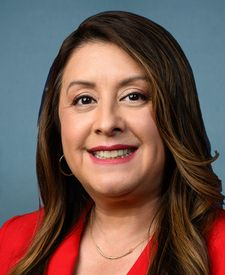
Luz RivasD · holds the seatFAngelica DueñasD · no votes in Congress, and not researched yet– - 30th DistrictLaura FriedmanD · holds the seatFScott MeyersR · no votes in Congress, and not researched yet–
- 31st District
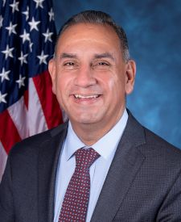
Gil CisnerosD · holds the seatFEric ChingR · no votes in Congress, and not researched yet– - 32nd District
 Brad ShermanD · holds the seatF
Brad ShermanD · holds the seatF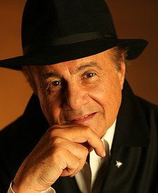
Larry ThompsonR · no votes in Congress, and not researched yet– - 33rd District
 Pete AguilarD · holds the seatFStephanie VargasR · no votes in Congress, and not researched yet–
Pete AguilarD · holds the seatFStephanie VargasR · no votes in Congress, and not researched yet– - 34th District
 Jimmy GomezD · holds the seatFAngela Gonzales-TorresD · no votes in Congress, and not researched yet–
Jimmy GomezD · holds the seatFAngela Gonzales-TorresD · no votes in Congress, and not researched yet– - 35th District
 Norma TorresD · holds the seatFMike CargileR · no votes in Congress, and not researched yet–
Norma TorresD · holds the seatFMike CargileR · no votes in Congress, and not researched yet– - 36th District
 Ted LieuD · holds the seatFHouston BrignanoR · no votes in Congress, and not researched yet–
Ted LieuD · holds the seatFHouston BrignanoR · no votes in Congress, and not researched yet– - 37th District
 Sydney Kamlager-DoveD · holds the seatFSamantha MotaD · no votes in Congress, and not researched yet–
Sydney Kamlager-DoveD · holds the seatFSamantha MotaD · no votes in Congress, and not researched yet– - 38th DistrictOpen seatPedro CasasR · no votes in Congress, and not researched yet–
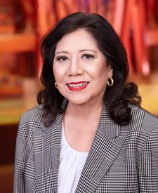
Hilda SolisD · no votes in Congress, and not researched yet– - 39th District
 Mark TakanoD · holds the seatFSteve ManosR · no votes in Congress, and not researched yet–
Mark TakanoD · holds the seatFSteve ManosR · no votes in Congress, and not researched yet– - 40th District
 Ken CalvertR · holds the seatA
Ken CalvertR · holds the seatA Young KimR · holds the seatA
Young KimR · holds the seatA - 41st District
 Linda SánchezD · holds the seatFMitch ClemmonsR · no votes in Congress, and not researched yet–
Linda SánchezD · holds the seatFMitch ClemmonsR · no votes in Congress, and not researched yet– - 42nd District
 Robert GarciaD · holds the seatFBrian BurleyR · no votes in Congress, and not researched yet–
Robert GarciaD · holds the seatFBrian BurleyR · no votes in Congress, and not researched yet– - 43rd District
 Maxine WatersD · holds the seatFCristian MoralesR · no votes in Congress, and not researched yet–
Maxine WatersD · holds the seatFCristian MoralesR · no votes in Congress, and not researched yet– - 44th District
 Nanette BarragánD · holds the seatFGenevieve AngelR · no votes in Congress, and not researched yet–
Nanette BarragánD · holds the seatFGenevieve AngelR · no votes in Congress, and not researched yet– - 45th District
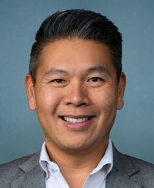
Derek TranD · holds the seatFChuong VoR · no votes in Congress, and not researched yet– - 46th District
 Lou CorreaD · holds the seatFDavid PanR · no votes in Congress, and not researched yet–
Lou CorreaD · holds the seatFDavid PanR · no votes in Congress, and not researched yet– - 47th District
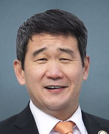
Dave MinD · holds the seatFJenny Le RouxR · no votes in Congress, and not researched yet– - 48th DistrictOpen seat
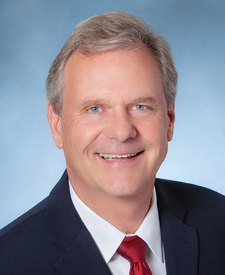
Jim DesmondR · no votes in Congress, and not researched yet–Marni von WilpertD · no votes in Congress, and not researched yet– - 49th District
 Mike LevinD · holds the seatFArmen KurdianR · no votes in Congress, and not researched yet–
Mike LevinD · holds the seatFArmen KurdianR · no votes in Congress, and not researched yet– - 50th District
 Scott PetersD · holds the seatFSteve CohenR · no votes in Congress, and not researched yet–
Scott PetersD · holds the seatFSteve CohenR · no votes in Congress, and not researched yet– - 51st District
 Sara JacobsD · holds the seatFRicardo CabreraR · no votes in Congress, and not researched yet–
Sara JacobsD · holds the seatFRicardo CabreraR · no votes in Congress, and not researched yet– - 52nd District
 Juan VargasD · holds the seatFJeff BelleR · no votes in Congress, and not researched yet–
Juan VargasD · holds the seatFJeff BelleR · no votes in Congress, and not researched yet–
Senators today


Representatives today
- Kevin KileyI · California · 3rd DistrictA
- Young KimR · California · 40th DistrictA
- David G. ValadaoR · California · 22nd DistrictA
- Ken CalvertR · California · 41st DistrictA
 Darrell IssaR · California · 48th DistrictLeaving CongressA
Darrell IssaR · California · 48th DistrictLeaving CongressA- Jay ObernolteR · California · 23rd DistrictA-
- Tom McClintockR · California · 5th DistrictB+
- Vince FongR · California · 20th DistrictB+
- Adam GrayD · California · 13th DistrictF
- Mike LevinD · California · 49th DistrictF
- Jim CostaD · California · 21st DistrictF
- Jimmy PanettaD · California · 19th DistrictF
- George WhitesidesD · California · 27th DistrictF
- Ted LieuD · California · 36th DistrictF
- Josh HarderD · California · 9th DistrictF
 Nancy PelosiD · California · 11th DistrictLeaving CongressF
Nancy PelosiD · California · 11th DistrictLeaving CongressF- Norma J. TorresD · California · 35th DistrictF
- Scott H. PetersD · California · 50th DistrictF
- Pete AguilarD · California · 33rd DistrictF
- J. Luis CorreaD · California · 46th DistrictF
- Salud O. CarbajalD · California · 24th DistrictF
 Julia BrownleyD · California · 26th DistrictLeaving CongressF
Julia BrownleyD · California · 26th DistrictLeaving CongressF- Raul RuizD · California · 25th DistrictF
- Mike ThompsonD · California · 4th DistrictF
- Brad ShermanD · California · 32nd DistrictF
- Dave MinD · California · 47th DistrictF
- Kevin MullinD · California · 15th DistrictF
- Gilbert Ray Cisneros, Jr.D · California · 31st DistrictF
- Ami BeraD · California · 6th DistrictF
- Juan VargasD · California · 52nd DistrictF
- Doris O. MatsuiD · California · 7th DistrictF
- Sydney Kamlager-DoveD · California · 37th DistrictF
- Zoe LofgrenD · California · 18th DistrictF
- Sara JacobsD · California · 51st DistrictF
- John GaramendiD · California · 8th DistrictF
- Robert GarciaD · California · 42nd DistrictF
- Jimmy GomezD · California · 34th DistrictF
- Linda T. SánchezD · California · 38th DistrictF
- Sam T. LiccardoD · California · 16th DistrictF
- Maxine WatersD · California · 43rd DistrictF
- Jared HuffmanD · California · 2nd DistrictF
- Derek TranD · California · 45th DistrictF
- Ro KhannaD · California · 17th DistrictF
- Nanette Diaz BarragánD · California · 44th DistrictF
- Laura FriedmanD · California · 30th DistrictF
- Luz M. RivasD · California · 29th DistrictF
- Judy ChuD · California · 28th DistrictF
- Mark DeSaulnierD · California · 10th DistrictF
- Mark TakanoD · California · 39th DistrictF
- Lateefah SimonD · California · 12th DistrictF
- James GallagherR · California · 1st District?
- Aisha WahabD · California · 14th District?
Who should California send to Congress, and who should it send home?
Say it where other readers can answer you. Opinions, videos and corrections about California are all in one place.
Discussion
California
Opinions, videos, corrections and bug reports about California, all in one place. Readers' words, not ours.
Leave out anything private about anyone. The rules, what your account keeps, and what readers have changed so far
Think a grade is wrong? Argue it with us.
The community meets on a group call every day, with the hosts and the panel. Bring the vote you think we got wrong.